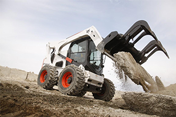
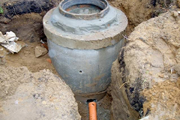
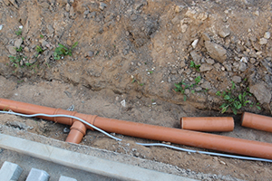
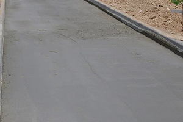
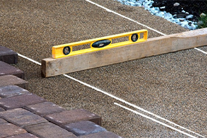
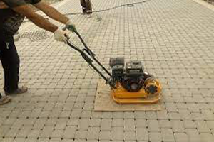

ПОДГОТОВКА
- Плитка. Она различается как по форме и используемому материалу, так и по типу изготовления. Есть вибролитье и вибропрессование. Второй вариант для нас предпочтительнее, так как отличается большей устойчивостью, стойкостью к жаре и морозу. Применяется как цементная, так и полимерпесчаная плита
- Форма укладки, узор, рисунок. На этом же этапе мы определяемся с последующей формой, в виде которой кирпичики и будут расположены. У нас уже есть примерные очертания участка, а значит мы можем определиться с шириной, которая будет ограничиваться с помощью бордюра.
ОФОРМЛЕНИЕ ОСНОВАНИЯ И УКЛАДКА
- На участке с помощью спец-техники производится планировка грунта с последующей подготовкой песчано-гравийного основания (далее: ПГС).
- При не обходимости (мы рекомендуем) производится монтаж колодца для приема ливневых вод. Так же производим прокладку комуникаций, от водосточных труб, для отвода воды в колодец.
- Организуются места пропуска, под плиткой, для комуникаций, таких как: электрика, автополив и прочее.
- Когда основание из ПГС готово (пролито и утрамбованно) приступаем к "УКАТКЕ" цементно-песчаной смеси (далее: ЦПС), предварительно выставив газонный борт. Толщина стоя варируется от 5-15см., в зависимости от назначения покрытия (пешеходная зона - заезд под автомобиль).
- После затвердевания плиты из ЦПС начинается самый ответственный этап - УКЛАДКА самой плитки. Сеянный песок растилается равномерным слоем 5-7см.(уже утрамбованный) стягивается по маякам в одну плоскость (соответственно уклонам) и уже на этот слой укладывается плитка.
- Финальный этап - трамбовка вибро-плитой всего полотна.





